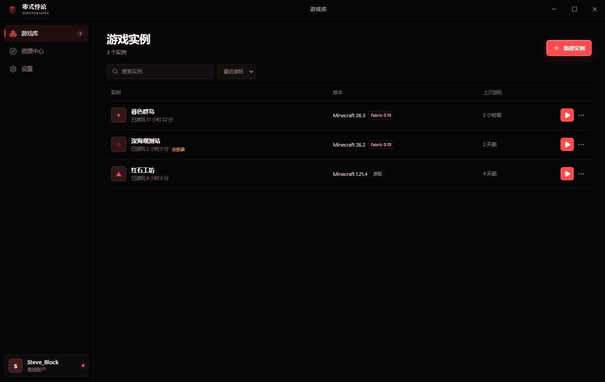
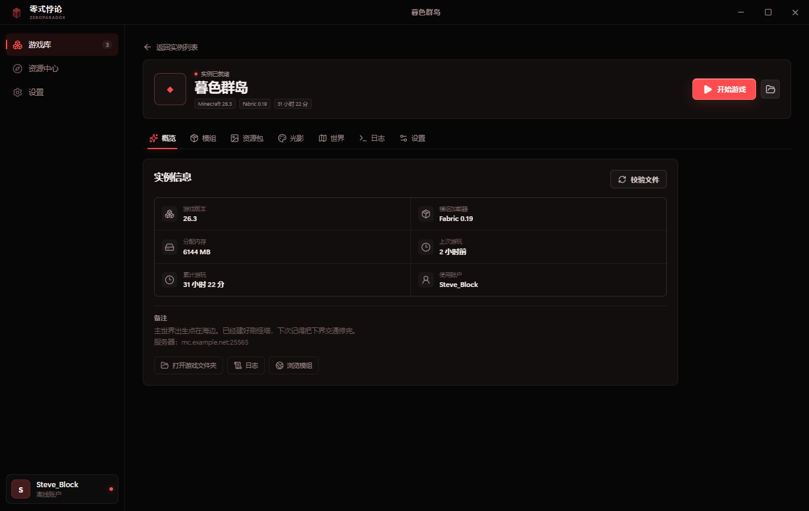
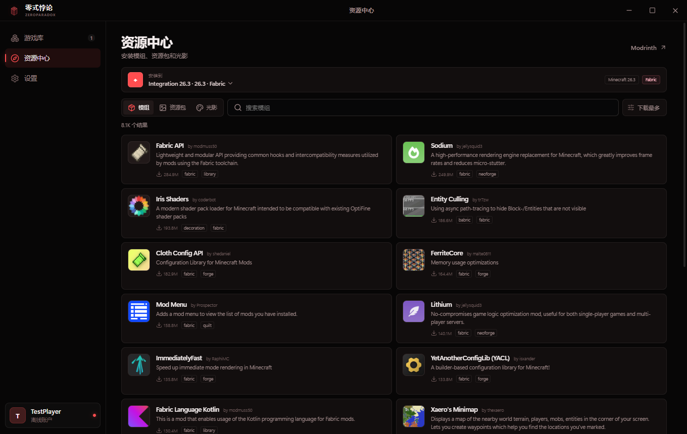
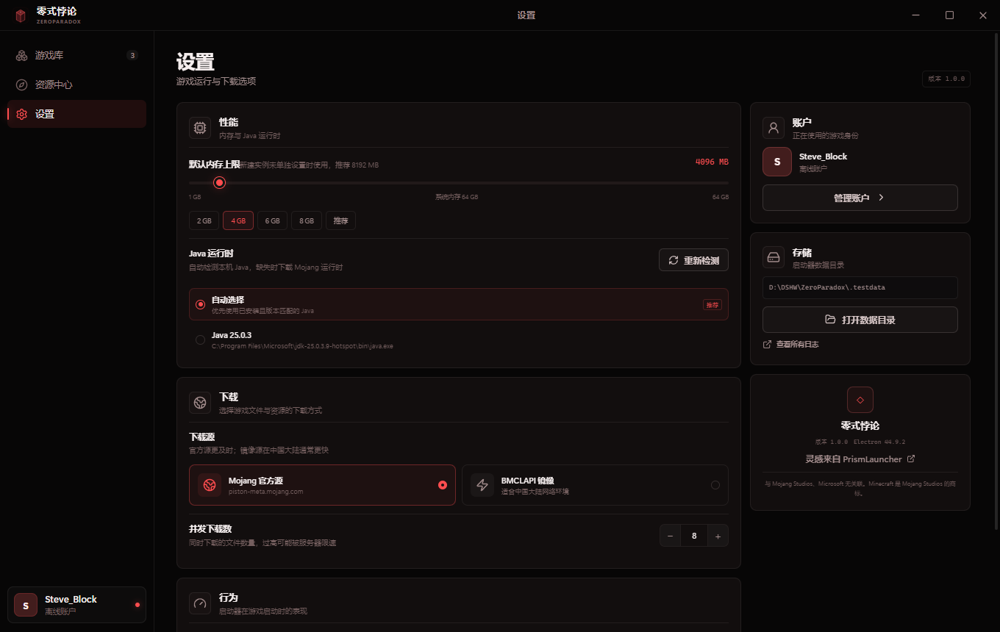

A small launcher for
Minecraft: Java Edition.
ZeroParadox is a personal, non-commercial launcher for Windows. It manages isolated instances, installs game files and Java runtimes, and authenticates Microsoft accounts through the official Microsoft and Xbox Live flow.
What it does
A focused launcher rather than a storefront. Every instance has its own game directory.
Isolated instances
Separate mods, saves, options, logs, and runtime settings for each game instance.
Vanilla, Fabric, and Forge
Installs the client, libraries, assets, and Fabric or Forge loader with checksum verification.
Microsoft authentication
Official OAuth device code flow, Xbox Live, XSTS, and Minecraft profile verification.
Automatic Java
Detects installed Java runtimes and downloads the matching Mojang runtime if needed.
Modrinth browser
Filters content by the instance's game version and loader, including required dependencies.
Local first
No telemetry. Accounts, instances, logs, and tokens stay on the user's computer.
Screenshots
The interface is a flat red-black theme with a compact instance list.




Account and data handling
Authentication
Microsoft account login uses the OAuth 2.0 device authorization grant. Passwords are entered only on Microsoft's login page. ZeroParadox receives an access token and a refresh token after the user approves the login.
Storage
Tokens, instances, and logs are stored locally in the user's launcher data directory. ZeroParadox does not operate a server and does not send account data to third parties.
Project status
Working
- Vanilla, Fabric, and Forge installation
- Instance isolation and local mod management
- Automatic Java detection and download
- Microsoft OAuth device code flow
- Xbox Live and XSTS authentication
Pending
- Mojang AppID review for Minecraft Services
- Public release builds